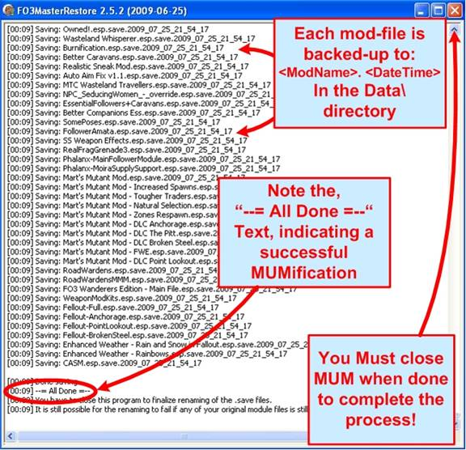

Master Update Mode is activated by creating another copy of the program, and renaming it to, “FO3MasterUpdate.exe”. When FO3Edit runs, it will recognize its filename and run in Master Update Mode accordingly.
- When Master Update Mode is activated, the following operations are performed without further user interaction:
- All modules in the Data folder are assigned into 2 groups, masters and Plug-ins, based on their file extension (.esm or .esp).
- The modules in each group are sorted by file modification date/time.
- All module files are re-dated, first all masters, then all Plug-ins, in 1 minute intervals.
- All active modules are then loaded, the ESM flag set in the file header if not yet present, and the ONAM sub records build if required.
- Any temporary overriding world space record that has at least one previous version that is persistent is marked as persistent.
- All modified modules are saved.

This process will result in a better-integrated group of mods, and will likely result in less crashes than without having run Master Update Mode. The process of creating the 2nd copy of FO3Edit for Master Update Mode is illustrated below:
This makes it possible to take an existing setup using patch 1.4 or older which contains mods that are broken by the bugs in patch 1.5 to be updated to patch 1.5 (likewise with v1.6), and used with existing save games without being messed up by the bugs.

The screenshot below shows you screenshots of a common setup, and the output of Master Update and Master Restore Modes:
You must close the program to finalize and save the settings, or your MUMifcation will not be completed. Running Fallout3 with MUM open will cause problems, so make sure you close the program when you see the, “--= All Done =--“indication.
It is recommended that you create icons for both MUM and MRM (along side of the FO3Edit Icon) so that you can conveniently run either depending on whether you’re playing or modding in the GECK. This is considered the best practice.
You can safely delete the Backup files at any time; these are created for your protection. You can restore a mod from one of these backups simply by renaming the backup file to the original plug-in filename.